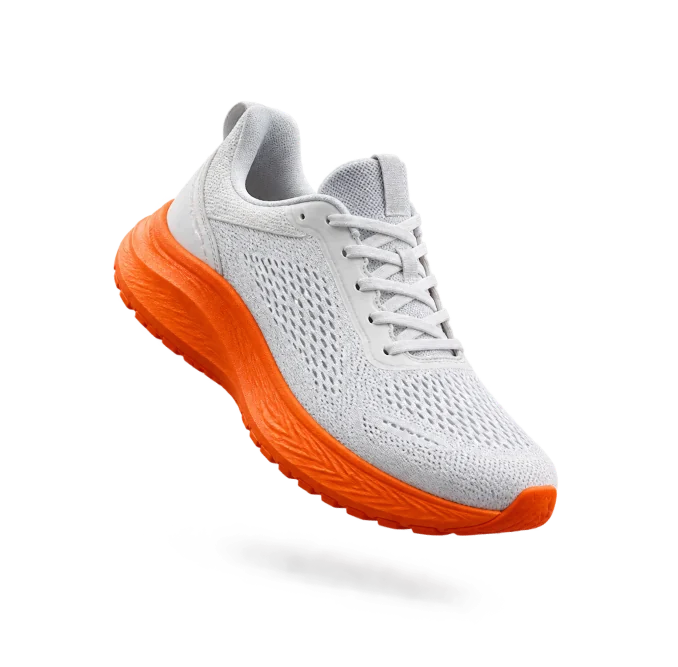
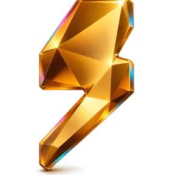

Спортика · прототип
Выберите стиль
Два визуальных направления одного продукта. Откройте на телефоне — интерфейс рассчитан на ширину от 375 px.

Стиль 1 Мягкий и светлый Пастельные карточки, 3D-объекты, шрифт Onest Открыть
Стиль 2 Второе направление Появится здесь, когда будет готов Перейти